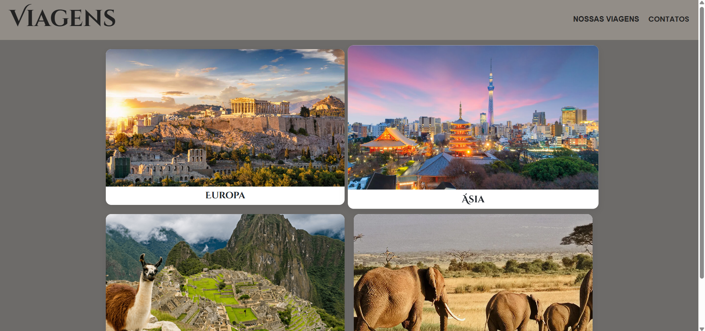
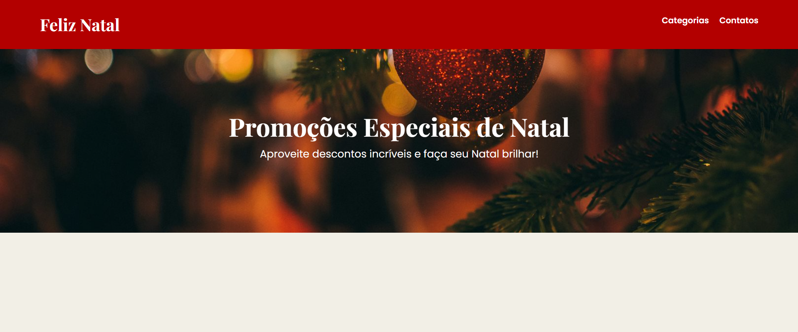
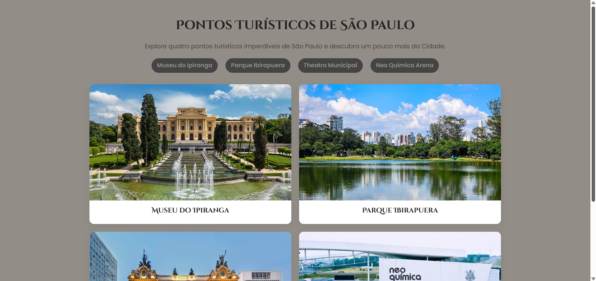
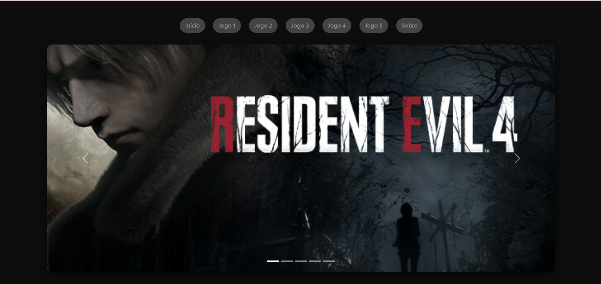
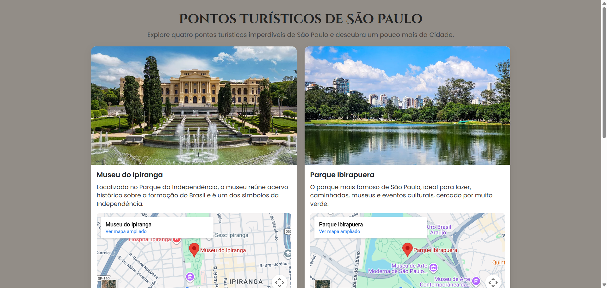
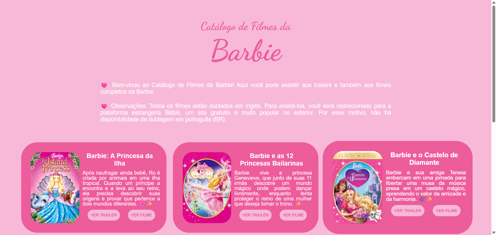
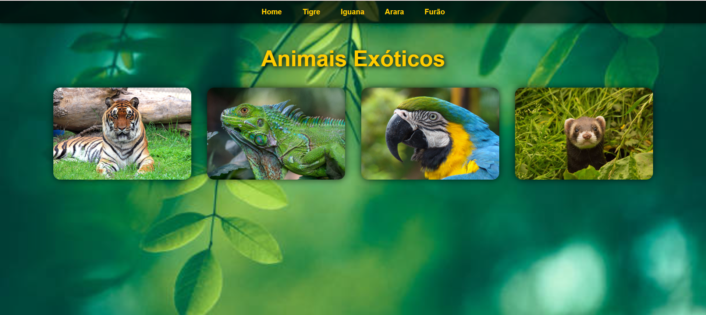
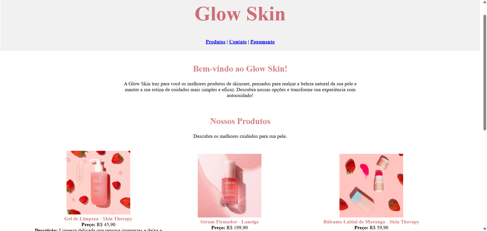

Site de Viagens
Desenvolvimento de um site institucional para apresentação de destinos turísticos e pacotes de viagem. O projeto foi estruturado com HTML e CSS, priorizando organização de conteúdo, usabilidade e uma interface limpa.
VER PROJETO
Site de Vendas-Natal
Desenvolvimento de uma landing page temática para vendas sazonais, utilizando HTML e CSS básico. O projeto focou na organização visual de seções promocionais e em um layout atrativo voltado para conversão.
VER PROJETO
Pontos Turísticos-SP-Melhorado
Desenvolvimento de uma versão aprimorada de site informativo sobre pontos turísticos de São Paulo, com melhorias na hierarquia de conteúdo e na organização visual, visando maior clareza na navegação.
VER PROJETO
Bootstrap de Jogos
Desenvolvimento de um site temático utilizando Bootstrap para criação de interface responsiva. O projeto explorou grid system e componentes prontos para garantir adaptabilidade e organização visual moderna.
VER PROJETO
Site de Pontos Turísticos-SP
Desenvolvimento de um site informativo com foco em aprendizado de iframe e estruturação de conteúdo em seções. A interface foi projetada para ser simples, funcional e de fácil navegação
VER PROJETO
Site de Catálogo de Filmes
Desenvolvimento de um catálogo digital de filmes utilizando HTML e CSS básico, com organização semântica do conteúdo e layout pensado para ser visualmente atrativo e intuitivo para o público-alvo.
VER PROJETO
Site de Animais
Criação de um site contendo uma página inicial com imagens de animais peçonhentos e um menu interativo que direciona a páginas individuais sobre cada espécie. O trabalho teve foco em navegação entre páginas, organização de conteúdo e uso de elementos visuais.
VER PROJETO
Site de Vendas
Desenvolvimento de uma página de vendas de produtos, simulando um pequeno e-commerce. O projeto contemplou a estruturação de seções, utilizando integralmente HTML. No projeto foi entregue um layout visualmente limpo e agradável na linguagem.
VER PROJETO